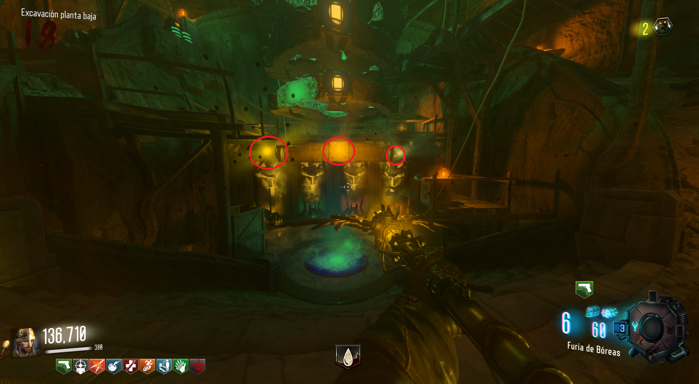
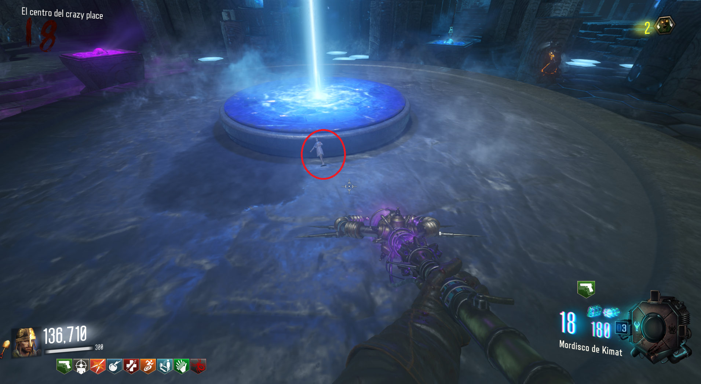
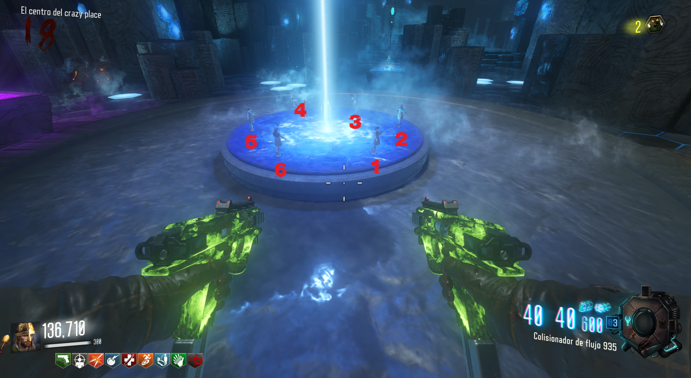
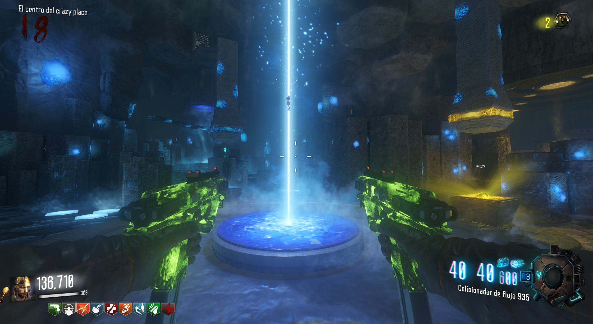

Reproducir canción
Para reproducir la canción deberemos de bajar a la zona de excavación con sangre zombie.
Una vez allí veremos 4 luces de colores en el último disco de abajo. Dispararemos a cada uno con su bastón correspondiente.

Después iremos al Crazy Place e interactuaremos con la muñeca de Samantha.

Dispararemos a las muñecas en este orden:

Hecho esto el Max Ammo aparecerá y la canción sonará.
